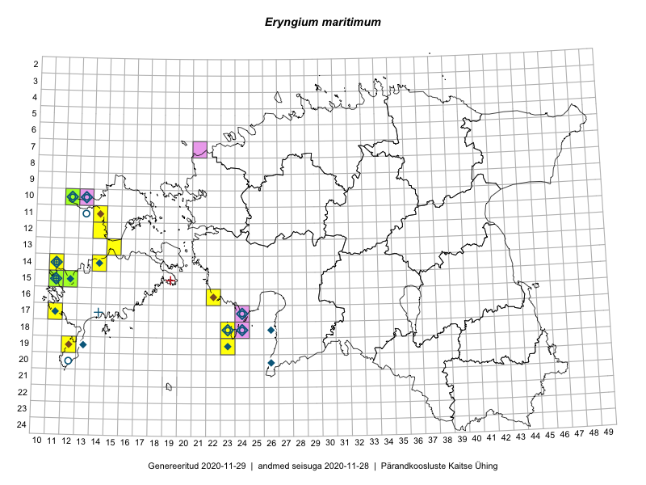

Eryngium maritimum
Uuendatud: 2016-12-02
Kaardile koondatud taksonid: Eryngium maritimum L.

Kaart põhineb 25 vaatlusel. Taksonit on leitud 8 ruudust.
Kuvatud viited 20 esimesele andmebaasikirjele, ülejäänud PlutoFis
- Ott Luuk: 2015-05-30: 18-23: GPS punkt
- Eeva-Maria Jeletsky, Tarmo Niitla: 2015-06-28: 11-14: GPS punkt
- Eeva-Maria Jeletsky, Tarmo Niitla: 2015-06-28: 11-14: ala
- Mari Reitalu: 2014-05-14: 15-11: ala
- Mari Reitalu, Oliver Parrest: 2015-07-14: 15-12: ala
- Mari Reitalu, Oliver Parrest: 2015-07-16: 15-11: ala
- Mari Reitalu, Oliver Parrest: 2015-07-14: 15-12: GPS punkt
- Mari Reitalu, Oliver Parrest: 2015-07-16: 15-11: GPS punkt
- Oliver Parrest: 2015-08-18: 19-12: GPS punkt
- Tõnu Ploompuu: 2015-07-14: 09-22: ala
- Peedu Saar, Maret Gerz: 2016-08-11: 13-15: GPS punkt
- Maret Gerz, Peedu Saar: 2016-08-11: 13-15: ala
- Karin Kaljund, Kaire Lanno, Indrek Melts: 2016-07-27: 18-23: ala
- Karin Kaljund, Kaire Lanno, Indrek Melts: 2016-07-27: 18-23: ala
- Karin Kaljund, Kaire Lanno, Indrek Melts: 2016-07-27: 18-23: ala
- Karin Kaljund, Kaire Lanno, Indrek Melts: 2016-07-28: 19-23: ala
- Peedu Saar, Ott Luuk: 2016-09-21: 18-23: GPS punkt
- Peedu Saar, Ott Luuk: 2016-09-21: 18-23: GPS punkt
- Peedu Saar, Ott Luuk: 2016-09-21: 18-23: GPS punkt
- Peedu Saar, Ott Luuk: 2016-09-21: 18-23: GPS punkt